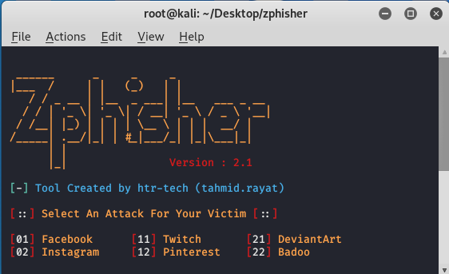

Zphisher
Zphisher é uma ferramenta automatizada de phishing que facilita a criação de páginas falsas para coleta de credenciais. Com suporte a diversos templates de sites populares, ela permite simular ataques de engenharia social de forma rápida e simples.
Principais Funcionalidades:
- Automação de criação de páginas de phishing para múltiplos serviços (Facebook, Instagram, Google, etc.)
- Configuração fácil e interface amigável via linha de comando
- Suporte a tunneling (Ngrok, Serveo, Localhost.run) para acesso externo
- Captura de credenciais e informações de IP das vítimas
- Atualizações frequentes e comunidade ativa
Recomendado para:
Pesquisadores de segurança, profissionais de Red Team e entusiastas que desejam demonstrar riscos de phishing em ambientes controlados e educativos.
🔗 Site Oficial